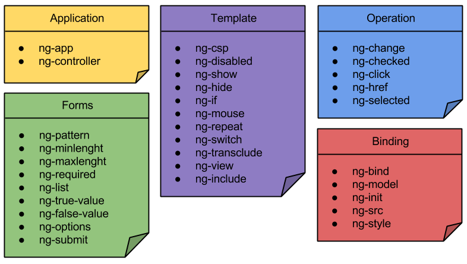

Extends HTML to structure your application
- Extends HTML to structure your application.
- Can be placed in element names, attributes, classnames and comments.
- Declarative.
- Use the data available in the scope.
- Add behaviours.
Angular Directives
Let's have a look at an example: ngRepeat.
<tr ng-repeat="user in users">
<td>{{user.name}}</td>
<td>{{user.age}}</td>
</tr>
It ilterates on a collection in the scope to create the DOM.
Let's have a look at another example: ngRepeatStart & ngRepeatEnd.
<div ng-repeat-start="thing in things"></div>
<h1>Inner nodes {{thing}}</h1>
<div ng-repeat-end=""></div>
In AngularJS 1.2, ng-repeat now supports multiple elements with the ng-repeat-start directive.
AngularJS comes with a collection of standard directives that can be combined.
<tr ng-repeat="user in users" ng-show="user.age >= 18">
<td>{{user.name}}</td>
<td>{{user.age}}</td>
</tr>
ngShow let you hide elements that do not validate a given expression.
Directive Definition Object
var myModule = angular.module(...);
myModule.directive('directiveName', function factory(injectables) {
var directiveDefinitionObject = {
priority: 0,
template: '<div></div>', // or // function(tElement, tAttrs) { ... },
templateUrl: 'directive.html',
transclude: false,
restrict: 'A',
scope: false,
controller: function($scope, $element, $attrs, $transclude, otherInjectables) { ... },
require: 'siblingDirectiveName', // or // ['^parentDirectiveName', '?optionalDirectiveName', '?^optionalParent'],
compile: function compile(tElement, tAttrs, transclude) {
return {
pre: function preLink(scope, iElement, iAttrs, controller) { ... },
post: function postLink(scope, iElement, iAttrs, controller) { ... }
}
},
link: function postLink(scope, iElement, iAttrs, controller) { ... }
};
return directiveDefinitionObject;
});